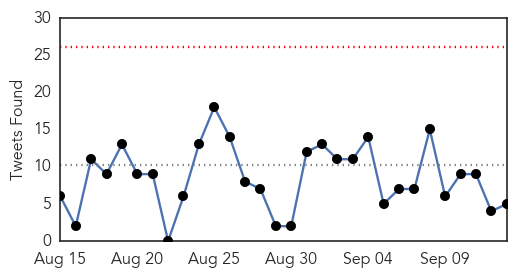

30 Day Trends
Web: 0 alerts, 0 warnings
Twitter: 0 alerts, 0 warnings
8 new deaths (11291 total)
252 new cases (28147 total)
Top Articles:
- 0.999
- Ebola patient in Dallas struggling to survive, says CDC head
- 0.997
- LIBERIA: Another KRTTI Student Falls To Ebola As Liberian Leader Calls For Robust National Response To End The Virus
- 0.995
- Ebola Case Diagnosed in the UK
- 0.975
- IMF says it’s committed to backing Liberia’s recovery from Ebola
- 0.883
- DARPA Is Developing Human Bio-Factories to Brew Lifesaving Vaccines
- 0.868
- ‘A Show of Solidarity’: Ellen Extols IMF Managing Director
- 0.867
- Trials to show if ZMapp, Ebola vaccines work to start soon in West Africa
- 0.813
- Ebola survivor Pauline Cafferkey on her ordeal: 'I left my isolation tent after 21 days. I havent been camping since'
- 0.771
- In aftermath of Ebola, Sierra Leone finds forgiveness is a powerful resource
- 0.764
- 5 Things I Learned In The World's Largest Ebola Outbreak
- 0.757
- President Sirleaf, Joe Boakai Receive Women Liberian Honors
- 0.663
- Sierra Leoneans Take Stock of Quarantine Losses
- 0.580
- On Transparency, Accountability, Open Governance OAP Commends Sierra Leone
- 0.543
- Christie recalls Maine's gift to N.J. last year — the 'Ebola nurse'
Top Tweets:
- 0.776
- In aftermath of Ebola Sierra Leone finds forgiveness is a powerful resource - Yahoo News http://t.co/iXrhGRhbT8 ebola EVD
- 0.752
- In aftermath of Ebola Sierra Leone finds forgiveness is a powerful resource - Christian Science Monitor http://t.co/sRhMg8ewGX ebola EVD
- 0.575
- This is How Ebola Resists Treatment with Antibody Cocktails - Gizmodo http://t.co/xPPVkuxU25 ebola EVD
- 0.575
- This is How Ebola Resists Treatment with Antibody Cocktails - Gizmodo http://t.co/haC661vzh9 ebola EVD
- 0.575
- This is How Ebola Resists Treatment with Antibody Cocktails - Gizmodo http://t.co/Vgm7NK3D4D ebola EVD
Web/News Articles

Tweets
Human Impact
Article Locations

Article Confidences